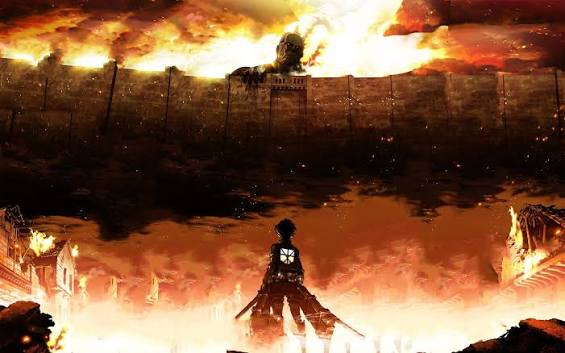
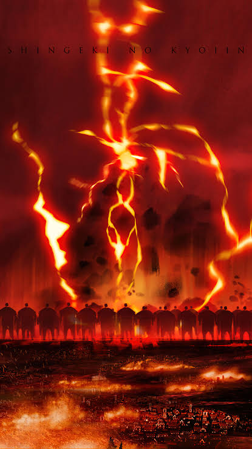
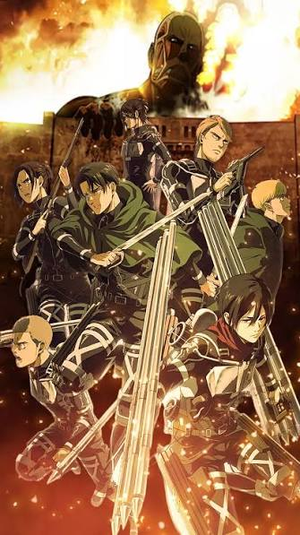
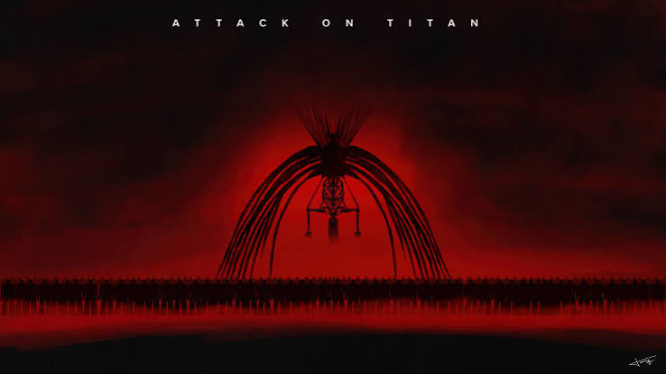

Attack on Titan is an anime set in a world where humanity is living inside walls to protect themselves from the danger of man eating monsters outside. The show centers around difficult topics such as racism, genocide, and more and shows how destructive these ideals can be and how history will always repeat itself if the future isn't changed.


Attack on Titan (Japanese: 進撃の巨人, Hepburn: Shingeki no Kyojin; lit. 'The Advancing Giant(s)') is a Japanese dark fantasy anime television series based on the 2009–2021 manga series Attack on Titan by Hajime Isayama. The series premiered on April 7, 2013, and concluded on November 5, 2023.
Set in a post-apocalyptic world where the remains of humanity live behind walls protecting them from giant humanoid Titans, Attack on Titan follows protagonist Eren Yeager, along with friends Mikasa Ackerman and Armin Arlert. When a Colossal Titan breaches the wall of their hometown, Titans destroy the city and eat Eren's mother. Vowing vengeance, Eren joins the elite Survey Corps, a group of soldiers who fight against Titans. It chronicles Eren's journey with the Survey Corps as they battle the Titans while investigating their origins and history.
Attack on Titan has received universal critical acclaim since its debut in 2013 and is widely regarded as one of the greatest anime series of all time. Critics and audiences have praised the show for its storytelling, animation, action sequences, characters, voice acting (original and dubbed), soundtrack, and dark themes. The series received numerous accolades, achieved widespread popularity globally, and is regarded as having contributed to the expansion of anime's international audience.
